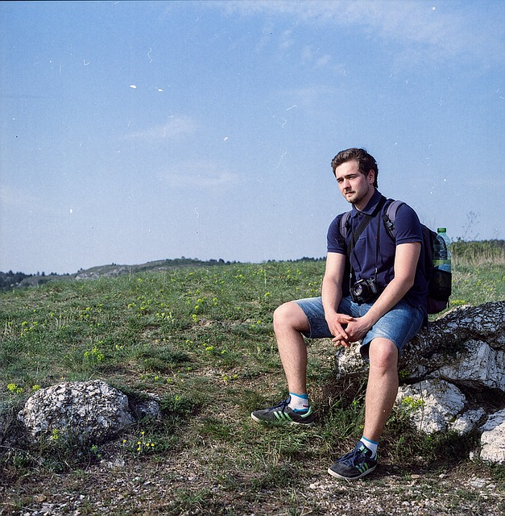
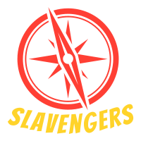
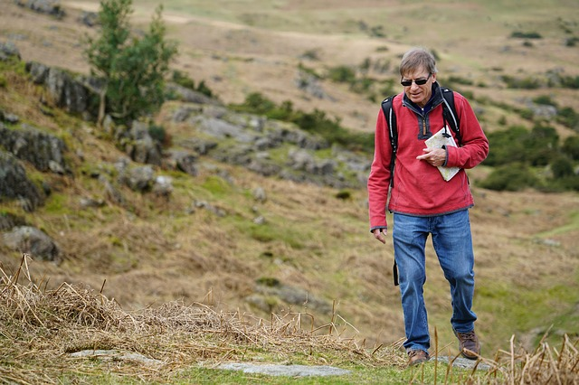
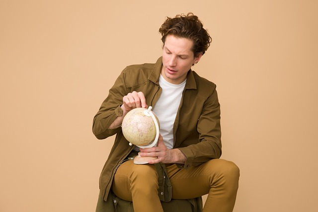

From Slavs with flair
The most adventureous trips and events in
Central-Eastern Europe
Who are Slavengers and why You schould know them
We are a group of friends who started their bussines in 2016.
Slavengers provide people with thrilling, unconventional and exciting tours.
We also organize parties and events on personal request.
Proffesionalism
- Experienced guides
- Customization of tours
- Participation in a trip is insured
Adventure
- "Not tourist"and wild destinations
- Unforgetable memories
- Making friends for life
Learning
- Real locals as Your guides
- Life of real communities
- Catering of local products
Fun
- Loads of good sense of humor
- Outdoors and indoors activities
- Regardles the weather we always hava a good plan :)
If You are up to something exciting and thrilling don`t hesitate and our stuff out!
The tours perfect for globetroters
Meet our crew


